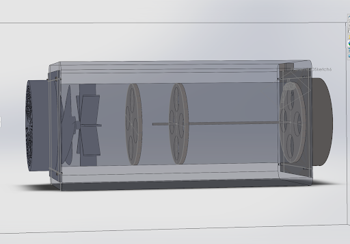
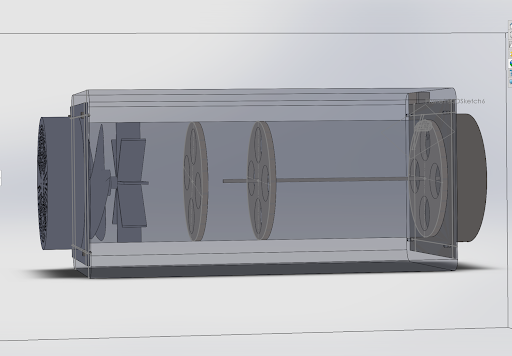

UCI Portfolio
CanSat
For my senior design project I participated in the year long UCI CanSat competition, hosted by the American Astronautical Society. I was in the mechanical group of the project, where I primarily designed the maple seed like structure that behaved as the payload. Two of these were dropped from a container, where they had to be tracked to ensure decent at under 20 m/s.
During the project I mainly behaved as the maple seed designer where I went through a vast array of designs and ideas. A notable design that was not used was my application of Robert Liebeck's propeller theory to create a windmill of flipped camber, which would behave as a maple seed. The final design of the maple seed is shown in the right, where the platform is made of a polypropylene sheet, while the housing is made of 3D printed PLA.


After coming up with a final design the physical maple seed was assembled as seen on the right. Moreover, the entire payload was assembled after combining all elements of the CanSat.

Our team also won the Dean's choice award for our exceptional work and we received a publication
Engineering Conference
Over the span of a three day weekend I participated in the engineering conference at UCI hosted by Boeing. At first I was part of a mechanical engineering team where we created a fan system that would extract CO2 from the atmosphere to decrease greenhouse gases. Our team won first place out of the mechanical engineering teams for creating the device shown on the right.
 

In the integration section our team combined with computer science, civil, and biochemical engineering teams to create a fully functioning CO2 capture system. To integrate all the other designs was very complicated, but eventually we created the design shown on the right. Unfortunately, our integration team placed second out of the two integration teams. Additionally, I won most creative air mover delegate for my innovative design and debate ideas. After the competition our teams final report was submitted to the UCI library for publication.


Aircraft Design
For my senior capstone course two separate aircraft were designed, both a long range and short range airplane. First general sizing was done using MATLAB. Many different aspect were tested, and the most notable characteristic was the trend between operating cost vs sweep and aspect ratio.


For the second half of the course a CAD model was developed for both planes using solidworks. Interior layouts were made (LOPA), along with economy class cross sections, landing gears, and CG locations. Although many assumptions were made both planes are technically functioning designs, but the short range plane was both more economical and fuel efficient.


Propellor Theory
During a specialization course with Robert Liebeck I created a MATLAB code that replicated the program described in the “Design of Optimum Propellers” by Charles Adkins and Robert Liebeck. With this code I was able to both design and analyze propellers/windmills for various applications ranging from air racers as shown in the right, to Cessna's. Moreover, I created a manual that any aspiring engineer could use to create their own code.

Robot Vehicle
In my Mechanical Systems Laboratory course I made a gaming controller that was programmed in both arduino and MATLAB to steer a virtual robot, and character in Agar.io. Additionally, I made the propulsion system for a robot in solidworks, which was made to represent the propulsion method used in the MATLAB simulation.


Neptune Probe
While working in a team of four we created a mission to send a probe to Neptune in order to study its weather patterns in relation to its high levels of internal heating. This mission utilized a Atlas V-501 carrying a Mars Reconnaissance Orbiter from ground launch, and an interplanetary transfer (gravity assist) from Jupiter. For this project I wrote the MATLAB code, created the idea for the mission, and conducted the research.
Weiss Lab
In a practice of interdisciplinary study I joined the Weiss lab at UCI after a graduate student for a chemistry course suggested I join. While aiding in graduate research at the lab I wrote an accepted UROP proposal for the summer detailing the development of a continuous flow synthesis system. The goal was to apply the project to injector technology, but I decided to part ways with the lab before the summer could start as I felt my interested had moved more towards my area of study.